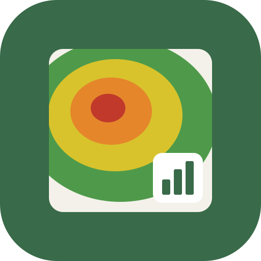
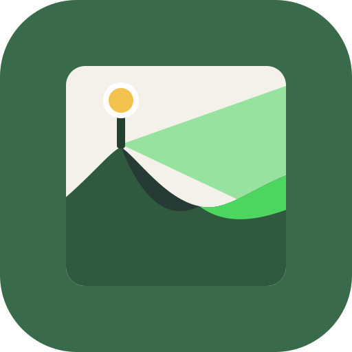
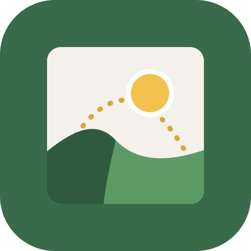
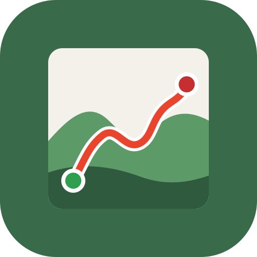
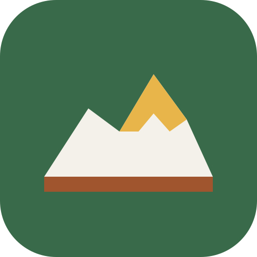

Apps lliures per al territori
Coneix el terreny que trepitges.
Veure, mesurar i entendre el relleu de qualsevol lloc del món: models 3D per imprimir, pendents, què es veu des d'un punt, hores de sol i rutes. Al navegador o al mòbil, sense comptes ni servidors.
L'app destacada
Terra Bloc: el terreny, en un bloc que pots imprimir
Tria una parcel·la del Cadastre o dibuixa una zona a qualsevol lloc del món. Terra Bloc en fa un model 3D amb la imatge aèria i el converteix en una peça sòlida per a la impressora 3D, amb la mida en mil·límetres.
- Relleu de 5 m de l'IGN a Espanya i de ~30 m a la resta del món
- Ortofoto, color per altitud o aspecte de maqueta
- Sòlid tancat amb base, a l'escala que triïs
- Exportació a STL i OBJ amb Terra Bloc Pro
Una família d'apps, una per a cada pregunta
Totes comparteixen el mateix mapa, les mateixes dades obertes i la mateixa manera de treballar. Si en saps fer servir una, les saps fer servir totes.
-
Terra Bloc
Com és aquest terreny en 3D?
Models 3D del relleu per veure'ls a la pantalla o imprimir-los.
Maquetes, docència, regals, impressió 3D
Obre l'app -

Terra Anàlisi
Quin pendent i quina orientació té?
Altitud, pendents, orientacions i ombrejat d'una parcel·la, amb estadístiques i informe PDF.
Agricultura, forestal, enginyeria, peritatges
Obre l'app -

Terra Visibilitat
Què es veu des d'aquí?
La conca visual d'un punt sobre el relleu, amb l'alçada de l'observador i de l'objectiu.
Antenes, internet rural, incendis, impacte visual
Obre l'app -

Terra Sol
Quantes hores de sol hi toquen?
Hores de sol directe d'un punt o d'una parcel·la, amb l'ombra de les muntanyes, qualsevol dia de l'any.
Cultius, hivernacles, plaques solars, cases
Obre l'app -

Terra Rutes
Com és aquesta ruta?
Obre tracks GPX o KML, mira'n el perfil i el relleu 3D, uneix-los i edita'ls.
Senderisme, ciclisme, curses de muntanya
Obre l'app -

Custòdia
Com gestiono les meves finques?
Registra parcel·les rústiques, consulta'n el Cadastre, el pendent i un índex experimental de risc d'incendi.
Propietaris rurals, entitats de custòdia
Obre l'app
Com funcionen
-
Gratuïtes, amb un Pro de pagament únic
Cada app es pot fer servir de franc. Les funcions avançades es desbloquegen amb un sol pagament, sense subscripcions.
-
Les teves dades no surten del dispositiu
No hi ha comptes ni servidor propi. Les zones, els tracks i les parcel·les es desen només al teu mòbil o ordinador.
-
Dades públiques i obertes
El relleu i les imatges vénen de l'IGN i del Cadastre a Espanya, i de fonts mundials obertes a la resta del món.
-
Sense instal·lar res
S'obren al navegador i es poden afegir a la pantalla d'inici. Aviat, també a Google Play.
Codi lliure
Totes les apps són programari lliure amb llicència AGPLv3: pots llegir-ne el codi, estudiar com calculen cada resultat i millorar-les.